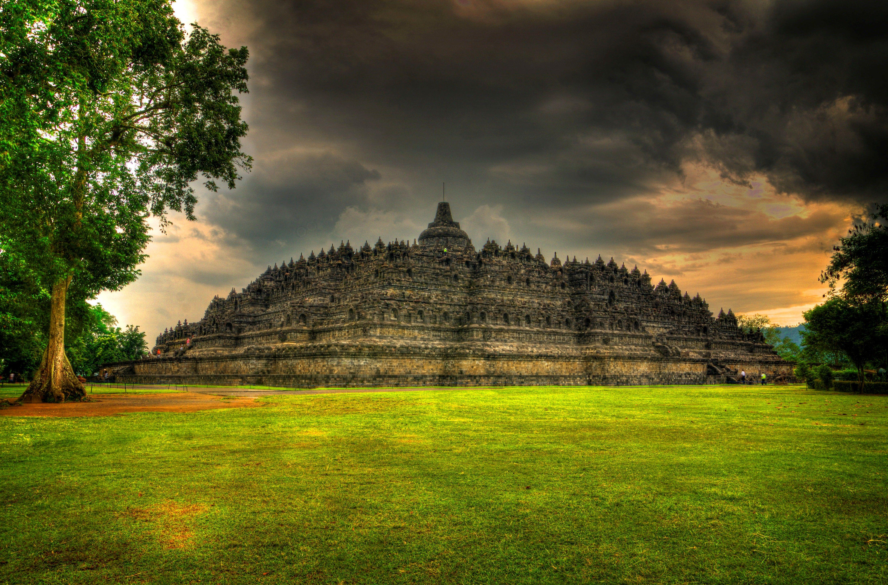

WISATA CANDI BOROBUDUR |
||||||||||||
| Tentang | Fasilitas | Tiket | Video | Beli Tiket Resmi | ||||||||||||
Tentang Borobudur Candi Borobudur merupakan monumen Buddha terbesar di dunia yang dibangun pada abad ke-8 oleh Dinasti Syailendra. Dikelilingi pemandangan alam Magelang yang megah, candi ini diakui sebagai warisan budaya dunia oleh UNESCO karena keindahan arsitektur kuno dan ribuan relief bersejarahnya. Daya Tarik & Fasilitas
Harga Tiket
Video Dokumenter |
Musik PengiringInformasi Jam Buka
Kontak & Tiket |
|||||||||||
|
Servatius Hasta Kristanto | 241011400076 Tugas Pemrograman Web 1 (PT_7) - UNPAM |
||||||||||||